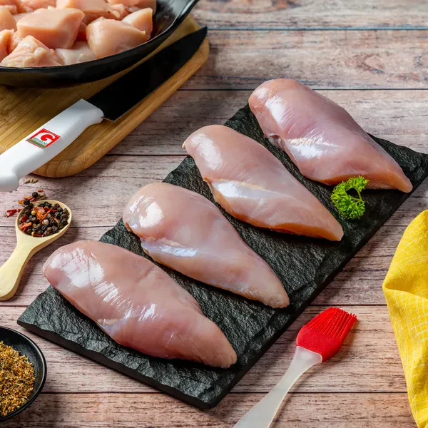
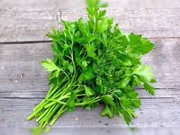

Chicken-stroganoff
Chicken Stroganoff is a creamy, flavorful dish perfect for a hearty meal. Start by sautéing 2 chopped onions and 2 minced garlic cloves in butter until soft. Add 500g of sliced chicken breast and cook until golden brown. Stir in 1 tablespoon of flour, then pour in 1 cup of chicken broth and ½ cup of heavy cream. Let it simmer until thickened. Add 1 tablespoon of Dijon mustard, 1 teaspoon of paprika, and ½ cup of sour cream, stirring well. Toss in sliced mushrooms and cook until tender. Season with salt and pepper, garnish with fresh parsley, and serve hot over pasta or rice for a rich and comforting dish
Rating :
Time : 30 Mins
Category : Main Dish
Tags : Chicken, onions, garlic, butter, flour, chicken broth, heavy cream, Dijon mustard, paprika, sour cream, mushrooms, salt, pepper, parsley
Ingredients
| Ingredients | Image | Ingredients | Image |
|---|---|---|---|
| Chicken Breast |  | paprika | 
|
| Garlic | parsley |  | |
| mushrooms | Dijon mustard | 
|
Recipe
Chicken Stroganoff is a rich, creamy, and flavorful dish that makes for a comforting and satisfying meal. To prepare this delightful recipe, begin by heating butter in a pan over medium heat and sautéing two finely chopped onions along with two minced garlic cloves until they turn soft and fragrant. Next, add 500 grams of sliced chicken breast to the pan and cook until the pieces turn golden brown on all sides.
At this stage, add one tablespoon of Dijon mustard, one teaspoon of paprika, and half a cup of sour cream, stirring everything together to infuse the dish with a tangy and mildly spiced flavor. Next, toss in a generous amount of sliced mushrooms and cook until they become soft and tender, absorbing all the delicious flavors of the sauce. For an extra depth of flavor, you can also add a splash of Worcestershire sauce or a pinch of smoked paprika. Season the dish with salt and pepper to taste, ensuring a well-balanced flavor profile. Finally, garnish with freshly chopped parsley for a touch of freshness and a pop of color.Once the chicken is well-cooked, sprinkle one tablespoon of flour over it and mix well to coat evenly. Gradually pour in one cup of chicken broth while stirring continuously to avoid lumps, followed by half a cup of heavy cream. Allow the mixture to simmer gently until it thickens into a luscious, creamy consistency. At this stage, add one tablespoon of Dijon mustard, one teaspoon of paprika, and half a cup of sour cream, stirring everything together to infuse the dish with a tangy and mildly spiced flavor.
Next, toss in a generous amount of sliced mushrooms and cook until they become soft and tender. Season the dish with salt and pepper to taste, ensuring a well-balanced flavor profile. Finally, garnish with freshly chopped parsley and serve hot over pasta, egg noodles, or a bed of rice to fully enjoy this rich and indulgent dish.For serving, Chicken Stroganoff pairs wonderfully with buttery egg noodles, fluffy white rice, or creamy mashed potatoes, allowing you to soak up every bit of the rich sauce. To elevate the dish further, serve it alongside a crisp green salad or a side of roasted vegetables. This dish is not only easy to prepare but also a crowd-pleaser, making it perfect for cozy nights at home or entertaining guests.